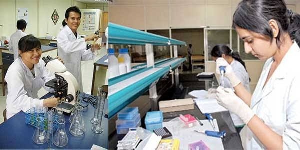

KFT
Kidney Function Test support and laboratory reporting.
MEDICAL LABORATORY TECHNICIAN · DELHI
I'm Deepshika, a Medical Laboratory Technician with professional diagnostic experience and a strong foundation in clinical laboratory work.

Focused on careful laboratory testing, clear reporting and a safe, organized clinical environment.
Deepshika has completed a Diploma in Medical Lab Technology and a B.Sc. in Medical Laboratory Technology, with practical experience across diagnostic and hospital environments.
Her resume records laboratory exposure at Apollo Diagnostics and hospital internships, including work involving hematology, histology, specimen preparation, documentation and safe laboratory procedures.
Common diagnostic testing support and analytical reporting, carried out with a patient-focused and organized approach.
Kidney Function Test support and laboratory reporting.
Liver Function Test support with structured analytical reports.
Routine health-check laboratory testing and report preparation.
Analytical review of laboratory reports and clear documentation.
Professional and internship exposure documented in Deepshika's resume.
DIAGNOSTICS
HOSPITAL
INTERNSHIP
YOUR LOCAL DIAGNOSTIC CONTACT
Medicare is located on B Block Main Road, opposite RPVV School, Yamuna Vihar, Delhi. Clinic timing: 8:00 AM – 10:00 PM.
B Block Main Road
Opp. RPVV School
Yamuna Vihar, Delhi
INSIDE THE LAB
Laboratory equipment, microscopy and organized testing spaces reflect the professional setting behind diagnostic work.

05 / CONTACT
For enquiries regarding laboratory testing and the Medicare clinic, contact Deepshika directly.